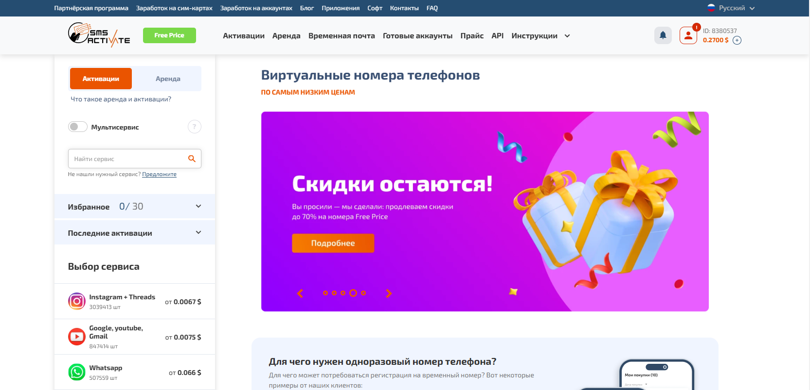
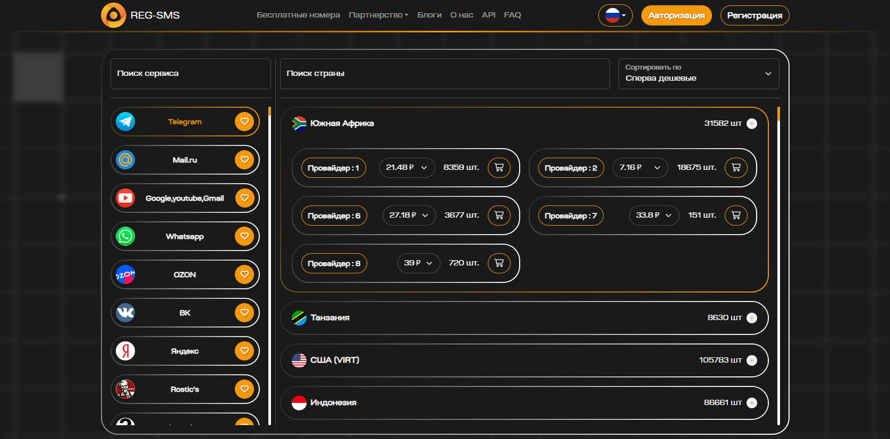
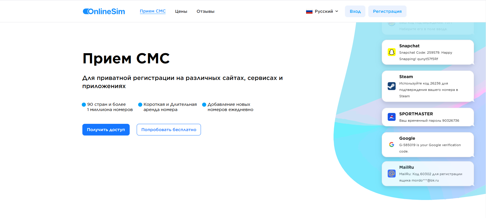
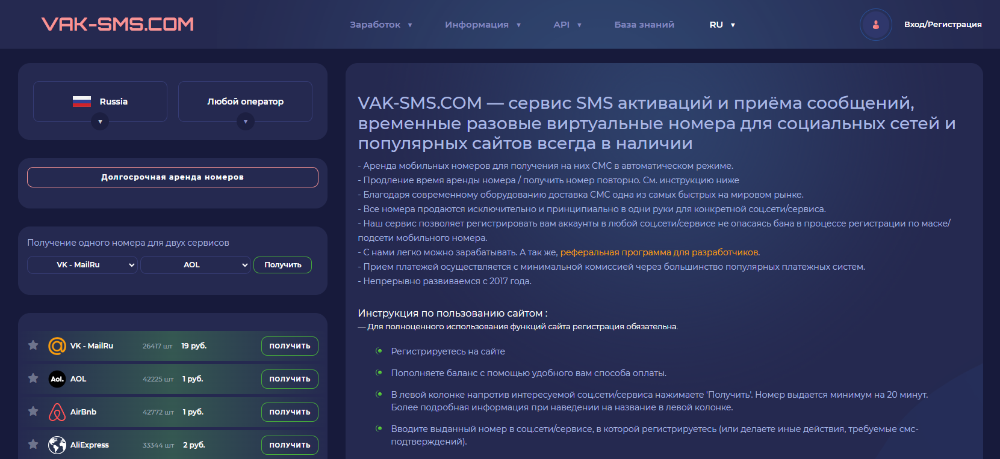
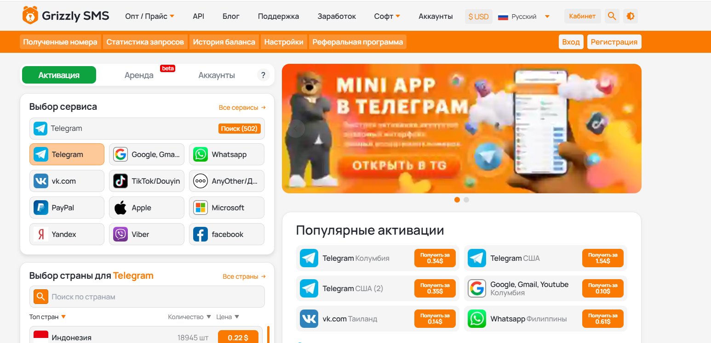
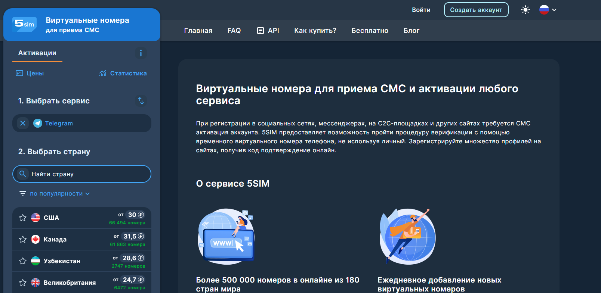
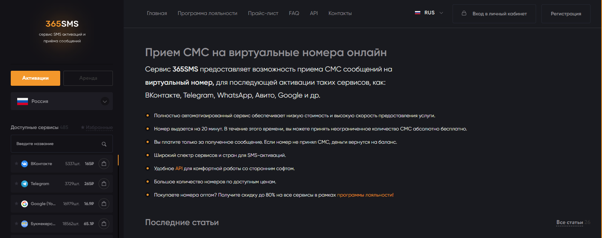
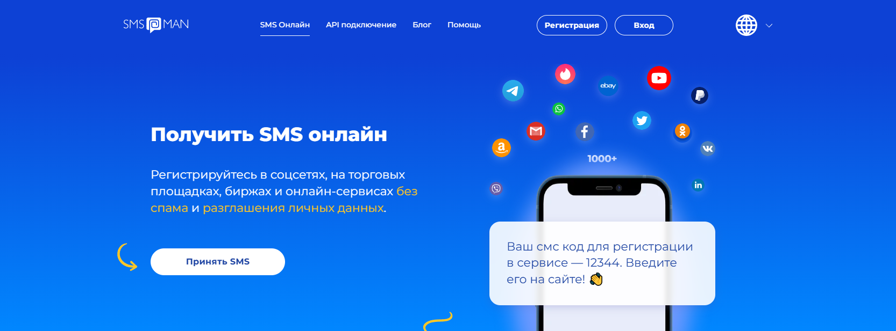

SMS-Activate

Официальный сайт: sms-activate.guru
Средняя оценка: 3,8 из 5
Краткое описание: SMS-Activate — это онлайн-сервис, предоставляющий виртуальные номера для приема SMS-сообщений. Он позволяет пользователям регистрироваться на различных платформах и сервисах, не раскрывая личный номер телефона. Сервис поддерживает более 180 стран и предлагает номера для активации на более чем 700 различных платформах и приложениях. Пользователи отмечают удобный интерфейс и оперативную поддержку.
Минимальная цена: от 3 рублей за активацию в ВКонтакте
Преимущества:
- Широкий выбор номеров из 180 стран
- Поддержка более 700 сервисов и приложений
- Возможность повторного приема SMS
- Оперативная и отзывчивая поддержка
- Гибкая система скидок и программа лояльности для постоянных клиентов
- Наличие API для разработчиков и интеграций
- Удобный и интуитивно понятный интерфейс
Недостатки:
- Иногда номера могут быть уже использованы, что требует повторной активации
- Комиссия при пополнении баланса с некоторых платежных систем
REG-SMS

Официальный сайт: reg-sms.org
Средняя оценка: 4,0 из 5
Краткое описание: REG-SMS — это онлайн-сервис, предоставляющий виртуальные номера для приема SMS и регистрации на различных платформах. Сервис охватывает более 170 стран и поддерживает свыше 900 сервисов по всему миру. Пользователи отмечают удобный интерфейс и широкий выбор номеров, что делает процесс регистрации быстрым и простым. REG-SMS также предлагает API для разработчиков, что упрощает интеграцию сервиса в собственные приложения.
Минимальная цена: от 3 рублей за активацию в ВКонтакте
Преимущества:
- Широкий выбор номеров из более чем 170 стран
- Поддержка свыше 900 сервисов и приложений
- Удобный и интуитивно понятный интерфейс
- Наличие API для разработчиков и интеграций
- Оперативная и отзывчивая поддержка клиентов
- Гибкая система скидок и программа лояльности для постоянных клиентов
- Постоянное обновление списка доступных номеров и стран
Недостатки:
- Иногда номера могут быть уже использованы, что требует повторной активации
- Комиссия при пополнении баланса с некоторых платежных систем
OnlineSim

Официальный сайт: onlinesim.ru
Средняя оценка: 4,5 из 5
Краткое описание: OnlineSim — это сервис, предоставляющий виртуальные номера для приема SMS-сообщений и активации аккаунтов на различных платформах. С его помощью пользователи могут регистрироваться в социальных сетях, мессенджерах и других онлайн-сервисах, не раскрывая свой личный номер телефона. Сервис охватывает более 90 стран и предлагает свыше 1 миллиона номеров, обеспечивая высокий уровень анонимности и безопасности.
Минимальная цена: от 2 рублей за разовый прием SMS
Преимущества:
- Широкий выбор номеров из более чем 90 стран
- Возможность краткосрочной и длительной аренды номеров
- Поддержка свыше 700 сервисов и приложений
- Удобный и интуитивно понятный интерфейс
- Наличие API для автоматизации процессов
- Оперативная и отзывчивая служба поддержки
- Регулярное обновление базы номеров и стран
Недостатки:
- Возможность задержки в получении SMS из-за перегрузки сервиса
- Ограниченная доступность бесплатных номеров
VAK-SMS.COM

Официальный сайт: vak-sms.com
Средняя оценка: 4,2 из 5
Краткое описание: VAK-SMS.COM — это онлайн-сервис, предоставляющий временные виртуальные номера для приёма SMS и активации аккаунтов на различных платформах. Сервис позволяет арендовать номера для регистрации в социальных сетях и на популярных сайтах без необходимости использования физической SIM-карты. Благодаря современному оборудованию, доставка SMS осуществляется быстро и надёжно. С 2017 года VAK-SMS.COM непрерывно развивается, предлагая своим пользователям удобные инструменты и широкий выбор номеров.
Минимальная цена: от 2 рублей за разовый приём SMS
Преимущества:
- Быстрая доставка SMS благодаря современному оборудованию
- Возможность продления аренды номера и повторного приёма SMS
- Все номера предоставляются исключительно одному пользователю для конкретного сервиса
- Поддержка регистрации аккаунтов в различных социальных сетях и сервисах без риска блокировки
- Реферальная программа для разработчиков стороннего программного обеспечения
- Приём платежей с минимальной комиссией через популярные платёжные системы
- Непрерывное развитие и обновление сервиса с 2017 года
Недостатки:
- Ограниченное время аренды номера, требующее продления для длительного использования
- Возможность отсутствия номеров для некоторых сервисов в определённые моменты
Grizzly SMS

Официальный сайт: 7grizzlysms.com
Средняя оценка: 4,2 из 5
Краткое описание: Grizzly SMS — это онлайн-сервис, предоставляющий виртуальные номера для приёма SMS и регистрации аккаунтов на различных платформах. Сервис охватывает более 260 стран и поддерживает свыше 500 сервисов, включая социальные сети, мессенджеры и почтовые службы. Пользователи отмечают удобный интерфейс и широкий выбор номеров, что делает процесс регистрации быстрым и простым. Grizzly SMS также предлагает API для разработчиков, что упрощает интеграцию сервиса в собственные приложения.
Минимальная цена: от 3,76 рублей за приём SMS
Преимущества:
- Широкий выбор номеров из более чем 260 стран
- Поддержка свыше 500 сервисов и приложений
- Удобный и интуитивно понятный интерфейс
- Наличие API для разработчиков и интеграций
- Оперативная и отзывчивая поддержка клиентов
- Гибкая система скидок и программа лояльности для постоянных клиентов
- Постоянное обновление списка доступных номеров и стран
Недостатки:
- Иногда номера могут быть уже использованы, что требует повторной активации
- Комиссия при пополнении баланса с некоторых платёжных систем
5SIM

Официальный сайт: 5sim.net
Средняя оценка: 4,5 из 5
Краткое описание: 5SIM — это онлайн-сервис, предоставляющий временные виртуальные номера для приёма SMS и активации аккаунтов на различных платформах. Сервис охватывает более 180 стран и предлагает свыше 500 000 номеров, что позволяет пользователям регистрироваться на сайтах и в приложениях без использования личного номера телефона. Благодаря автоматизированному процессу, получение SMS происходит мгновенно, обеспечивая быструю и удобную регистрацию.
Минимальная цена: от 1 рубля за приём SMS
Преимущества:
- Широкий выбор номеров из более чем 180 стран
- Мгновенное получение SMS благодаря полностью автоматизированному процессу
- Наличие API для автоматизации массовой регистрации аккаунтов
- Низкие комиссии при пополнении баланса через различные платёжные системы
- Круглосуточная поддержка клиентов через Freshdesk и Telegram
- Возможность использования номеров для регистрации на различных платформах, включая социальные сети и мессенджеры
- Регулярное обновление базы номеров и добавление новых стран
Недостатки:
- Возможность задержки в получении SMS при высокой нагрузке на сервис
- Ограниченное количество номеров для некоторых стран и сервисов в определённые периоды
365SMS

Официальный сайт: 365sms.pro
Средняя оценка: 4,5 из 5
Краткое описание: 365SMS — это онлайн-сервис, предоставляющий виртуальные номера для приёма SMS и активации аккаунтов на различных платформах. Сервис охватывает более 180 стран, предлагая номера для активации таких сервисов, как ВКонтакте, Telegram, WhatsApp, Авито, Google и другие. Полностью автоматизированная система обеспечивает низкую стоимость и высокую скорость предоставления услуг. Номер выдаётся на 20 минут, в течение которых можно принять неограниченное количество SMS бесплатно. Оплата взимается только за полученное сообщение; если SMS не поступило, средства возвращаются на баланс.
Минимальная цена: от 1 рубля за приём SMS
Преимущества:
- Широкий выбор номеров из более чем 180 стран
- Полностью автоматизированный процесс, обеспечивающий быструю выдачу номеров
- Возможность приёма неограниченного количества SMS в течение 20 минут без дополнительной оплаты
- Оплата только за успешно полученные сообщения с возвратом средств при отсутствии SMS
- Удобный API для интеграции со сторонними приложениями
- Программа лояльности с возможностью получения скидок до 80% для оптовых покупателей
- Поддержка популярных сервисов, таких как ВКонтакте, Telegram, WhatsApp, Авито, Google и других
Недостатки:
- Возможны задержки в приёме SMS при высокой нагрузке на сервис
- Ограниченное время аренды номера (20 минут), что может быть недостаточным для некоторых пользователей
SMSka
Официальный сайт: smska.xyz
Средняя оценка: 4,0 из 5
Краткое описание: SMSka — это онлайн-сервис, предоставляющий временные виртуальные номера для приёма SMS. Он позволяет пользователям регистрироваться на различных сайтах и платформах без необходимости использования личного номера телефона. Сервис предлагает широкий выбор номеров из разных стран, обеспечивая удобство и безопасность при регистрации на онлайн-ресурсах.
Минимальная цена: от 1 рубля за приём SMS
Преимущества:
- Широкий выбор номеров из различных стран
- Удобный и простой в использовании интерфейс
- Быстрая активация номеров и приём сообщений
- Возможность использования для регистрации на различных онлайн-платформах
- Доступные цены на услуги
- Обеспечение конфиденциальности личных данных пользователей
- Отсутствие необходимости в регистрации для использования сервиса
Недостатки:
- Ограниченное количество номеров для некоторых стран
- Возможность задержки в получении SMS при высокой нагрузке на сервис
SMS-MAN

Официальный сайт: sms-man.ru
Средняя оценка: 1,4 из 5
Краткое описание: SMS-MAN — это онлайн-сервис, предоставляющий виртуальные номера для приёма SMS и активации аккаунтов на различных платформах. Сервис предлагает номера из более чем 200 стран, поддерживая свыше 1000 различных сервисов и приложений. Пользователи могут использовать виртуальные номера для регистрации в социальных сетях, мессенджерах и других онлайн-сервисах, обеспечивая конфиденциальность своих личных данных. Однако, согласно отзывам, многие пользователи сталкиваются с проблемами при использовании сервиса, такими как неработающие номера и отсутствие возврата средств.
Минимальная цена: от 4 рублей за приём SMS
Преимущества:
- Широкий выбор номеров из более чем 200 стран
- Поддержка свыше 1000 сервисов и приложений
- Возможность анонимной регистрации на различных онлайн-платформах
- Удобный интерфейс и простой процесс получения номеров
- Наличие API для интеграции с собственными приложениями
- Возможность аренды номеров на длительный срок
- Доступные цены на услуги
Недостатки:
- Низкая средняя оценка сервиса и негативные отзывы пользователей
- Проблемы с получением SMS и неработающие номера
- Виртуальный номер — это телефонный номер, не привязанный к физической SIM-карте, используемый для получения SMS с кодами подтверждения.
- Приобрести виртуальные номера можно на специализированных сервисах, таких как SMS-Activate, 5SIM, OnlineSim и другие.
- При выборе учитывайте стоимость, количество доступных стран, скорость приёма SMS и наличие отзывов пользователей.
- Цена зависит от страны и сервиса, но в среднем начинается от 1-5 рублей за разовую активацию.
- Да, многие сервисы предлагают аренду номеров на сутки, неделю или даже месяц.
- Большинство сервисов принимают оплату через банковские карты, электронные кошельки, криптовалюту и другие платёжные системы.
- Да, виртуальные номера подходят для активации аккаунтов в популярных мессенджерах и социальных сетях.
- Риски минимальны, но некоторые сервисы могут блокировать аккаунты, зарегистрированные на виртуальные номера.
- Некоторые сайты предоставляют бесплатные номера, но их могут использовать сразу несколько пользователей, что повышает риск блокировки.
- Это зависит от сервиса — некоторые позволяют приём нескольких сообщений, другие предоставляют номер только для одноразовой активации.
Часто задаваемые вопросы о покупке виртуальных номеров:
1. Что такое виртуальный номер для приёма SMS?
2. Где купить виртуальный номер для регистрации?
3. Как выбрать лучший сервис виртуальных номеров?
4. Сколько стоит купить виртуальный номер?
5. Можно ли купить виртуальный номер для длительного использования?
6. Как оплачивается покупка виртуального номера?
7. Можно ли использовать виртуальный номер для регистрации в Telegram, WhatsApp и ВКонтакте?
8. Есть ли риски при использовании виртуального номера?
9. Можно ли получить бесплатный виртуальный номер для регистрации?
10. Можно ли получать SMS на виртуальный номер повторно?